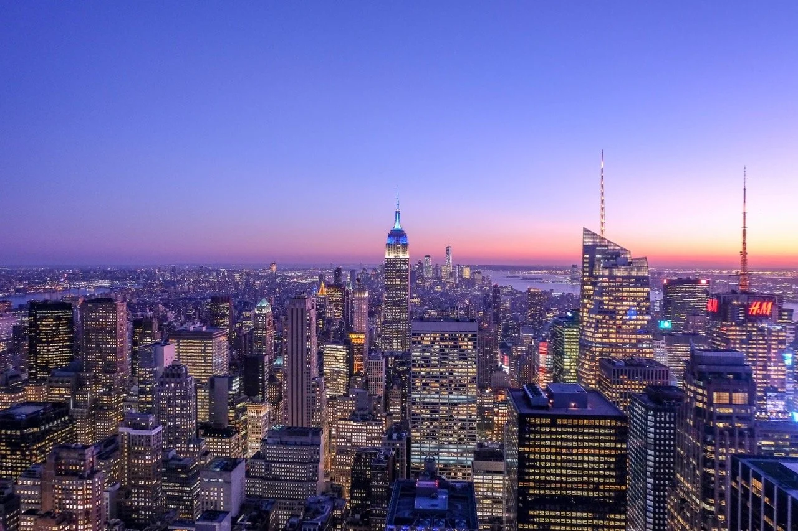
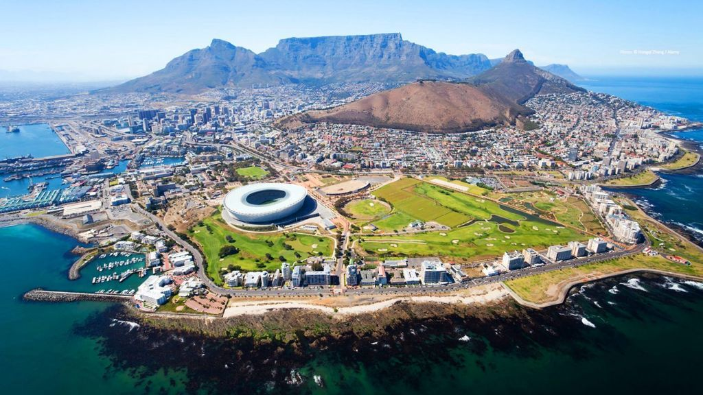
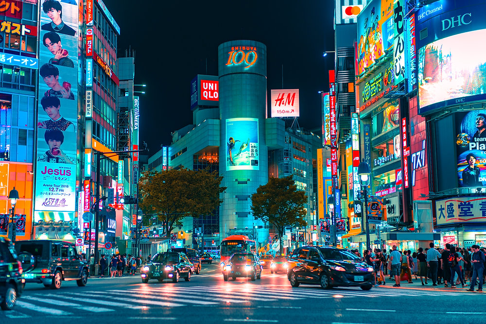

Top Travel Picks

Paris, France
Romantic streets, world-class art, and French cuisine await in the City of Lights.

Bali, Indonesia
From tropical beaches to serene temples, Bali is the ultimate paradise getaway.

New York, USA
Skyscrapers, Broadway shows, and endless energy—experience the Big Apple.

Cape Town, South Africa
Iconic whitewashed houses, blue-domed churches, and breathtaking sunsets.

Tokyo, Japan
Enjoy the city lights of the buildings and locality

Sydney, South Wales
Blend of tradition and technology—explore temples, neon lights, and sushi heaven.